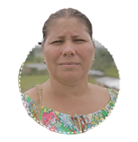
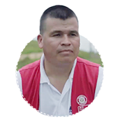
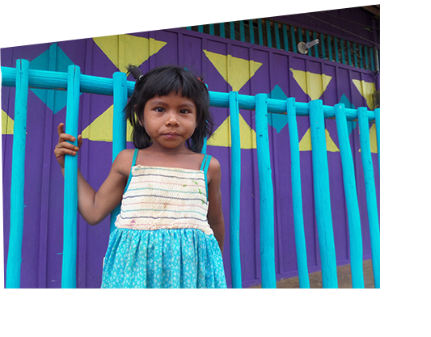
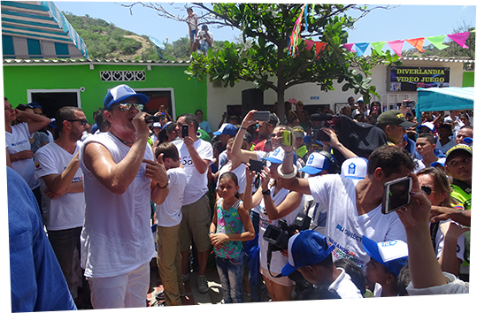
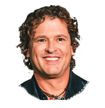

María, maestra rural, hija de un docente que fue asesinado por miembros de la guerrilla.
“Mi padre siempre nos decía que la sociedad necesita gente que empuje hacia adelante. Hay que dejar una huella donde quiera que vayamos”.

Un voluntariado por la paz
en Caquetá
Construimos una gran alianza con el sector público, ex miembros de la guerrilla y la comunidad, para contribuir a la integración y el diálogo social.
Llevamos contenidos educativos y tecnología del programa Escuela+ a los habitantes de la Vereda de Las Mercedes, en el Municipio de Solano. Ante la falta de energía eléctrica, también instalamos Escuela+ Solar, mientras que a través de nuestro voluntariado Piedra, Papel, Tijera reacondicionamos las aulas y reconstruimos el internado.

CONECTAMOS
LÍDERES
DIRECTV Colombia fue la única compañía invitada por el presidente Juan Manuel Santos al aniversario de la firma del Acuerdo de Paz, en Caquetá.
SOCIOS
Escuela+ es un programa que ofrece recursos audiovisuales educativos, impulsado por DIRECTV junto a Discovery en la Escuela, National Geographic, Take Off Media, Torneos y Disney.
INSPIRACION
Más de 2 millones de espectadores alcanzó el episodio especial Colombia, aguas de paz que reflejó el voluntariado y fue emitido por la señal exclusiva OnDIRECTV.
ALIADOS
Nuestros aliados fueron Fuerza Aérea Colombiana, Fuerza Armada, Ministerio de Educación, Agencia para la Reincorporación y la Normalización (ARN) y la comunidad.


Iván, en proceso de reintegración.
“Vengo a sanar una herida. El perdón consiste en construir algo que se ha roto. Eso hacen hoy mis manos, recuperar la confianza de la comunidad”.
“Vengo a sanar una herida. El perdón consiste en construir algo que se ha roto. Eso hacen hoy mis manos, recuperar la confianza de la comunidad”.
En Mitú
conectamos culturas
Nos propusimos trabajar junto a la comunidad multiétnica de Ceima Cachivera para favorece su conectividad: reacondicionamos la escuela, mejoramos sus senderos y les acercamos los contenidos y la tecnología de Escuela+.

CONECTAMOS
SOCIOS
Un aula del programa Escuela+ fue instalada en la comunidad, con la tecnología de DIRECTV y los contenidos educativos de Discovery en la Escuela, National Geographic, Take Off Media, Torneos y Disney.
ALIADOS

Trabajamos junto a Aerolínea Satena, la Fuerza Aérea Colombiana, el Ministerio de Educación y la Agencia para la Reincorporación y la Normalización (ARN).
Carlos Vives,
un aliado en Pescaíto
Convocamos al cantante Carlos Vives junto a su fundación. Tras la Perla de América, para mejorar la vida de la comunidad de Pescaíto, en el barrio San Martín, en Santa Marta.
Junto a cientos de voluntarios reacondicionamos la Institución Jhon F. Kennedy: además de las obras de infraestructura, brindamos capacitación sobre los recursos de Escuela+.

CONECTAMOS
LIDERES
El músico samario Carlos Vives contribuyó a difundir el trabajo que se realiza en la comunidad de La Magdalena.
ALIADOS

Trabajamos con la fundación Tras la Perla de América, Ministerio de Educación, Fuerza Aérea Colombiana y Pinturas Tito Pabón.

Carlos Vives,músico colombiano
“Es importante este apoyo, que se hayan enamorado del barrio y entre todos contribuyamos a darle dignidad a 50 niños que estudian aquí”.
“Es importante este apoyo, que se hayan enamorado del barrio y entre todos contribuyamos a darle dignidad a 50 niños que estudian aquí”.